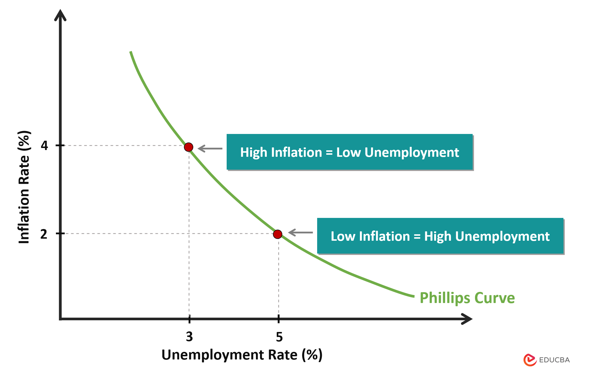

필립스 곡선(Phillips Curve)
필립스 곡선(Phillips Curve)
필립스 곡선은 영국의 통계학자 A.W. 필립스가 1958년에 제시한 경제학의 중요한 개념입니다. 이 곡선은 실업률과 물가상승률(또는 임금상승률) 간의 관계를 보여주며, 경제 정책 수립에 있어 핵심적인 역할을 합니다.
📊 필립스 곡선의 기본 개념
핵심 원리: 실업률과 물가상승률은 서로 반비례 관계에 있습니다. 즉, 실업률이 낮아지면 물가상승률이 높아지고, 실업률이 높아지면 물가상승률이 낮아집니다.
경제적 의미: 이는 완전고용(낮은 실업률)과 물가안정(낮은 물가상승률)을 동시에 달성하기 어렵다는 것을 의미합니다.

📈 필립스 곡선의 작동 원리
경기 호황기:
• 실업률 ↓ → 노동력 부족 → 임금 상승 → 물가 상승
• 예: 실업률 3% → 물가상승률 8%
경기 침체기:
• 실업률 ↑ → 노동력 과잉 → 임금 하락 → 물가 하락
• 예: 실업률 8% → 물가상승률 2%
정책적 딜레마:
• 실업률을 낮추려면 물가상승을 감수해야 함
• 물가안정을 추구하면 실업률 상승을 감수해야 함
⚠️ 필립스 곡선의 한계와 비판
1. 스태그플레이션 현상
• 1970년대 오일쇼크 이후 실업률과 물가상승률이 동시에 상승
• 필립스 곡선의 단순한 반비례 관계가 깨짐
2. 기대 인플레이션의 영향
• 사람들의 인플레이션 기대가 실제 물가에 영향
• 단기적 관계는 성립하지만 장기적으로는 성립하지 않음
3. 구조적 실업의 증가
• 기술 변화, 산업 구조 변화로 인한 구조적 실업
• 단순한 수요 관리 정책으로 해결 어려움
🛠️ 현대 경제학에서의 해석
1. 단기 vs 장기 필립스 곡선
• 단기: 반비례 관계 성립 (정책 효과 있음)
• 장기: 수직선 (자연실업률에서 균형)
2. 적응적 기대 vs 합리적 기대
• 적응적 기대: 과거 경험을 바탕으로 한 기대
• 합리적 기대: 모든 정보를 활용한 최적 기대
3. 공급 측면의 중요성
• 노동시장 유연성, 교육훈련, 기술혁신
• 자연실업률 자체를 낮추는 정책 필요
🎯 정책적 시사점
1. 통화정책의 딜레마
• 금리 인하: 실업률 감소 but 물가상승 압력
• 금리 인상: 물가안정 but 실업률 증가
2. 재정정책의 균형
• 확장적 재정정책: 경기 활성화 but 인플레이션
• 긴축적 재정정책: 물가안정 but 경기 위축
3. 구조적 정책의 중요성
• 자연실업률 자체를 낮추는 정책
• 생산성 향상, 노동시장 개혁, 교육투자
현실적 적용
필립스 곡선은 여전히 경제 정책 수립에 중요한 지침이 되고 있습니다.
하지만 단순한 반비례 관계가 아닌, 더 복잡한 경제 현실을 반영한 정책이
필요합니다. 특히 코로나19 이후의 경제 상황에서는 전통적인 필립스
곡선의 한계가 더욱 명확해졌습니다.
결론
필립스 곡선은 경제학의 핵심 개념 중 하나로, 실업률과 물가상승률의
관계를 이해하는 데 중요한 도구입니다. 하지만 현대 경제에서는 이 관계가
더욱 복잡해졌으므로, 다양한 요인을 종합적으로 고려한 정책 수립이
필요합니다.